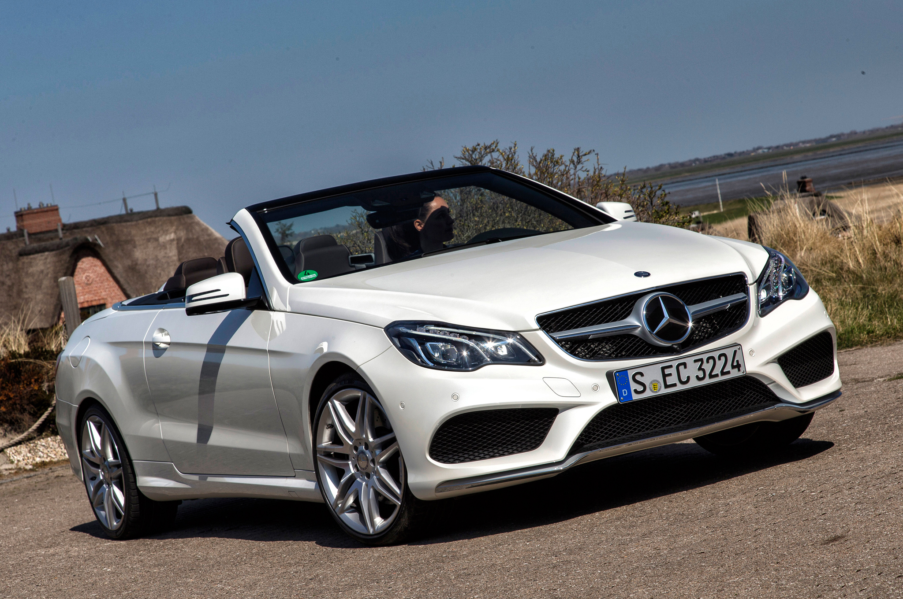
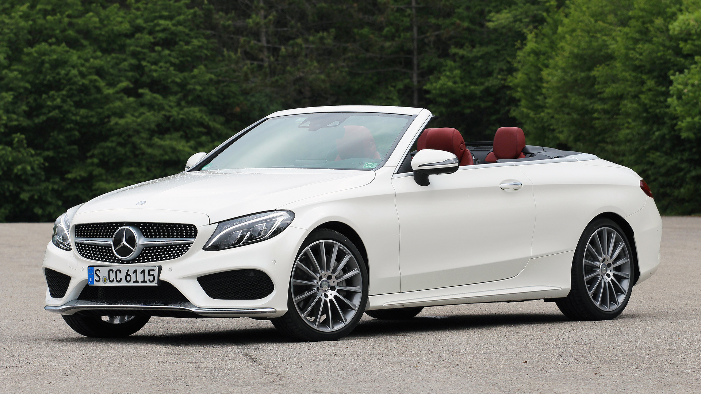
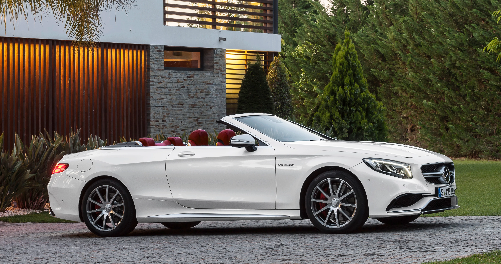
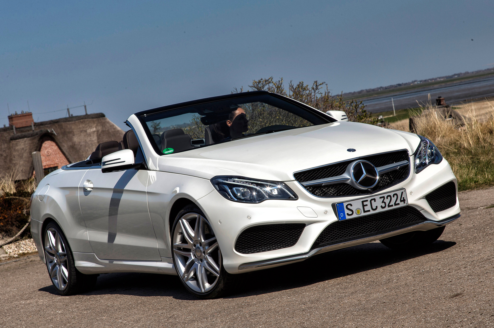
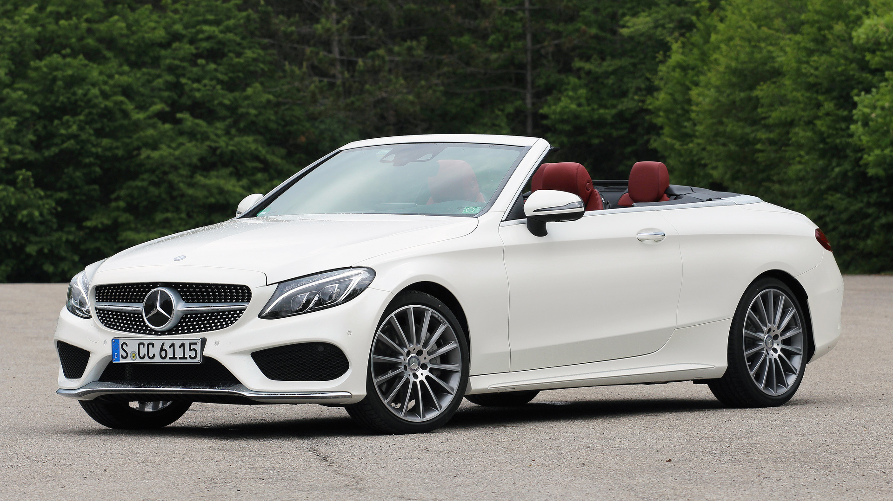
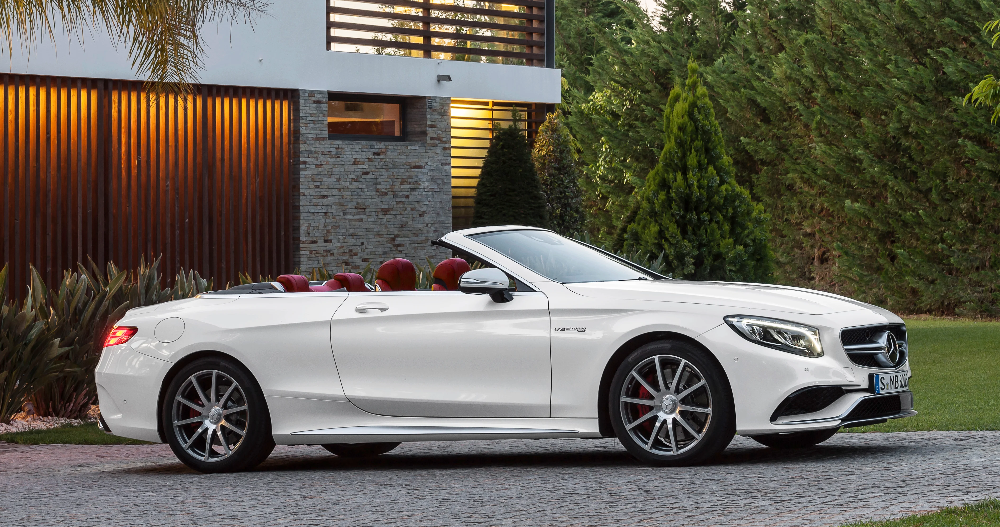

White Mercedes S-Class Convertibile FOR SALE!
White Mercedes S-Class Convertible: Luxury and Refinement in Open-Air Driving
Overview
The White Mercedes S-Class Convertible is the epitome of luxury and refinement, blending timeless elegance with cutting-edge technology. This convertible’s sleek white exterior complements its sophisticated design, making it a statement of both class and performance. As part of the S-Class lineup, it delivers the highest standard of comfort and innovation, offering an unmatched open-air driving experience.
Performance and Features
The S-Class Convertible is powered by a 4.0L V8 biturbo engine that produces up to 496 horsepower in the AMG S 63 version, enabling it to accelerate from 0 to 100 km/h in just 4.1 seconds. The 9-speed automatic transmission ensures a smooth and responsive ride, whether cruising on the highway or tackling tight corners. The advanced AIRMATIC suspension system provides a comfortable ride, adapting to various road conditions effortlessly.
Inside, the S-Class Convertible showcases the height of Mercedes-Benz luxury, with premium leather seating, Burmester 3D surround sound, and an expansive dual-screen infotainment and digital display. With advanced safety features and driver assistance technologies, it offers a perfect balance of comfort, safety, and performance.
Market Price
The market price for a White Mercedes S-Class Convertible starts at around $140,000 in the United States, with prices for the AMG models climbing higher. In South Africa, prices range from R2.5 million to R4 million, depending on the model and additional features.
Combining luxury with the thrill of open-air driving, the Mercedes S-Class Convertible stands as a symbol of refinement, offering both exceptional performance and an unparalleled driving experience.